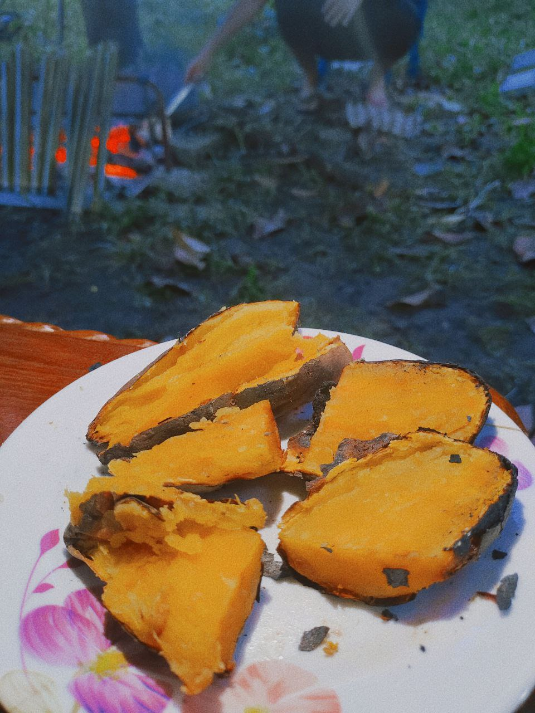
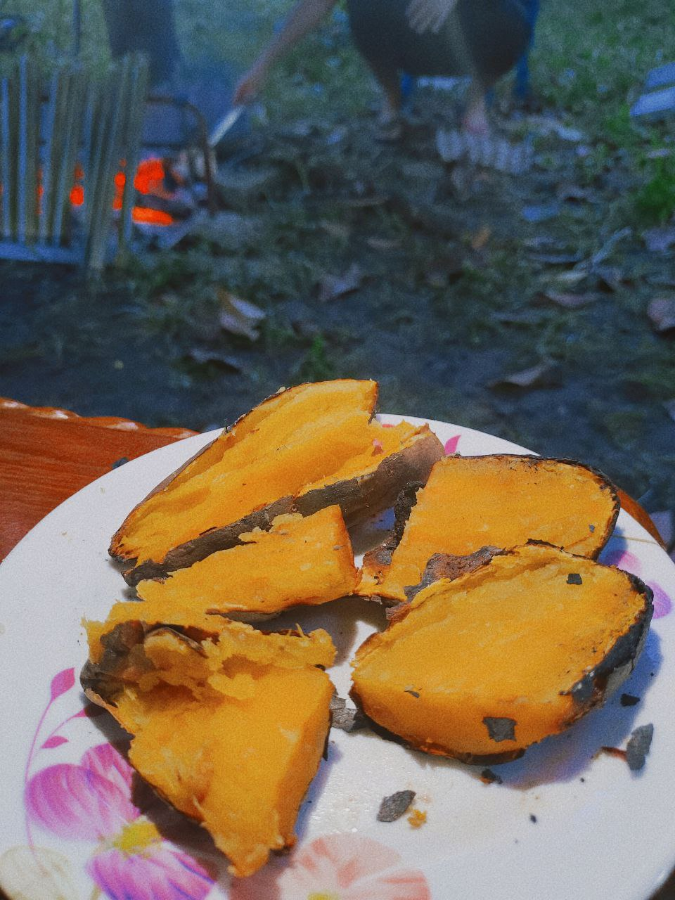
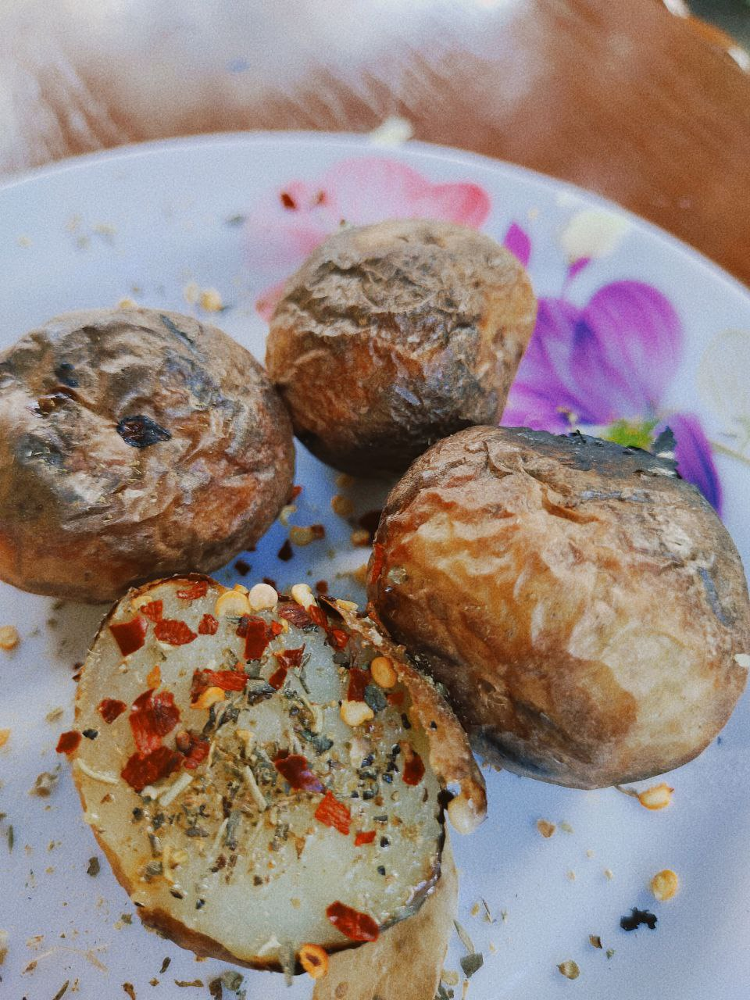
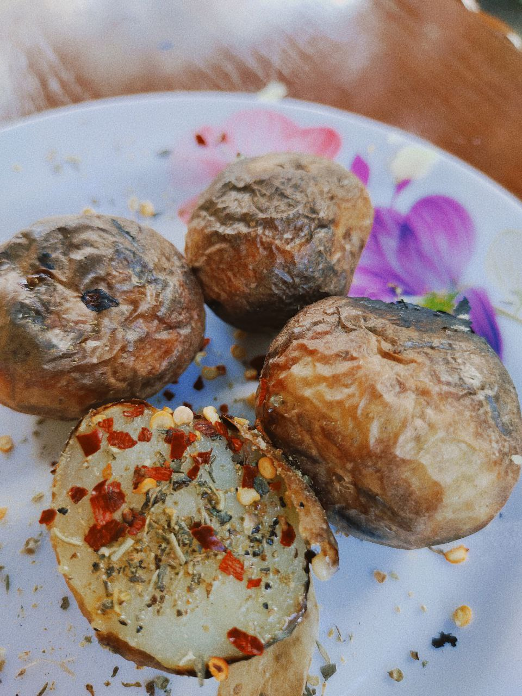

This gallery is a place for me to showcase the activities I have done which I can add more wonderful experiences and memories.
SAF ( Sukan Antara Fakulti ) at UiTM Machang
Joining the SAF was so much fun where I was able to meet classmates and friends from other faculties. We practiced for the same sport, ate together and doing activities together from evening to night. Not only that, the netball team I represented got the silver place among the entire faculty. I am so proud of myself in joining this sport event. While I was there, I was placed in college and it gave the experience and college vibes to me because I have never lived there.


Facilitator on Scout
This is the most challenging experience of being facilitator. Before this I regularly participated in scouting activities but as a student. This time I was assigned to be a facilitator or known as "Kelana" in scout term. We need to take care of the safety of students and provide welfare supplies to them so that they are in a situation where their safety is guaranteed. We also get involved in their activities so that they can be monitored.


Collection of Food
Cooking has been my hobby since 4th grade. I really like to cook and feed my mom because only she loves my western food. I also always help when cooking in the kitchen which I like to make cooking videos. In addition, I love taking pictures of food and making food collections so that I can cook with the same look and taste.
 

 

Firstime on sky after 6 years
Fly after 6 years ago is a very thrilling and anxious moment because I have not felt this moment for a long time. Being able to fly after this MCO was one of the greatest memories for me as all the procuder were renewed and according to the new norms.